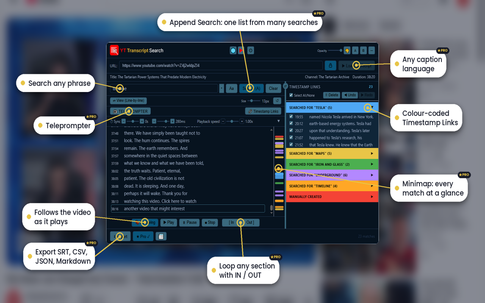
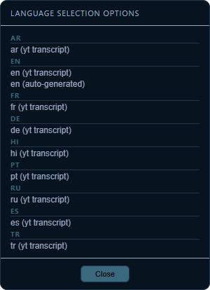
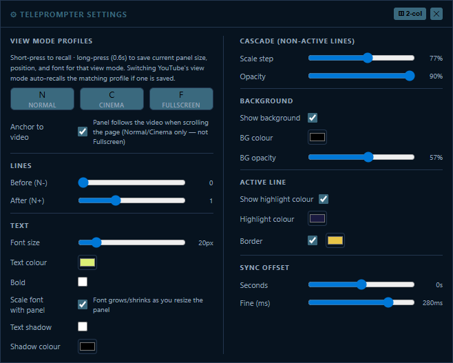
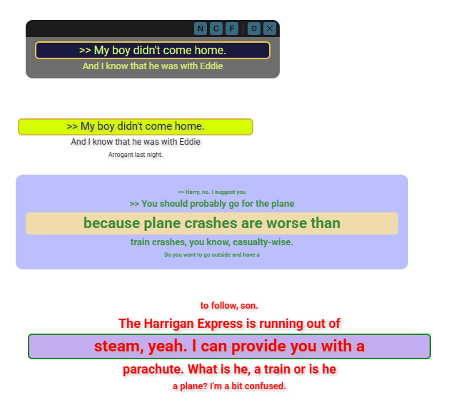
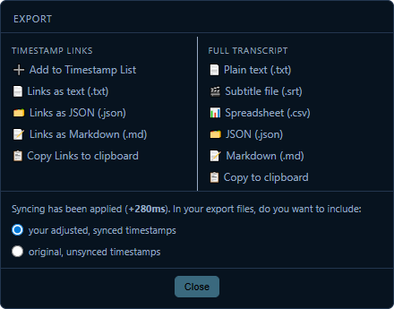

A complete guide to YT Transcript Search — searching, Timestamp Links, Teleprompter, export, themes, and more.
Add the extension from the Chrome Web Store or Edge Add-ons. No account required.
Go to any YouTube video with captions and click the extension icon.
Click Load Transcript. The full timed transcript appears in seconds.
Type any word or phrase. Click a result to jump straight to that moment.
The panel is movable (drag the top bar) and resizable (drag edges or corners). The default theme on first load is Deep Ocean.

Main interface in the default Deep Ocean theme — colour-coded Timestamp Links, highlighted matches, Append Search active.
Transcripts come from YouTube’s own caption data. On a watch page, click Load Transcript. You can also paste any watch URL into the URL field.

Language selection menu — choose the caption track that best matches the video.
Type a term or phrase and press Enter or click Search. Matches are highlighted in the transcript with colour-coded backgrounds that match each search batch.
Every search creates a coloured batch in the left pane. Manually added lines appear under a “MANUALLY CREATED” header.
Opens a dedicated floating panel that scrolls the transcript with the video — ideal for voice-overs, practice, or following along without the main overlay.

Teleprompter Settings (2-column) — view-mode profiles, lines, text, cascade, background, active-line highlight, sync offset.

Examples of different teleprompter appearances — high-contrast dark panels to bright highlighted styles.
Click Export for two columns: Timestamp Links and Full Transcript. When a sync offset is active, you can choose adjusted or original timestamps.

Export menu — Timestamp Links left, full transcript right, plus synced vs original timestamps.
Free includes: load and search transcripts, colour-coded Timestamp Links, basic text export and clipboard, themes, opacity, layout A/B, font size, sync offset, transport controls, and Following mode.
Pro unlocks: Teleprompter (full customisation and profiles), Append Search, URL lock, language picker, import chapters, manual add to Timestamp List, SRT/CSV/JSON/Markdown export, longer history and undo depth, and minimap.
Activate Pro with the ★ Pro button — enter the email used at purchase and your licence key. Verification is local and cryptographic.
Open the full list any time via the ⚙ button (Shortcuts tab).
If the extension stops responding after an update, refresh the YouTube tab. That reloads the content script with the new version.
Free to install. Works on any YouTube video with captions